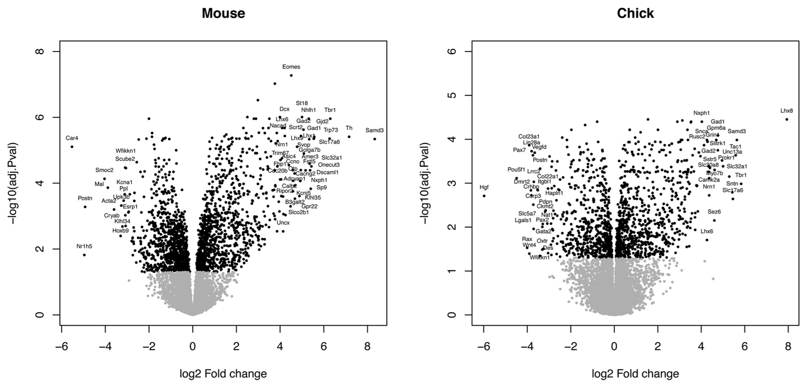

Research
We study how genomic information is transformed into functional cellular machinery and how this orchestration breaks down in human disease. By combining multi-omics data integration, network theory, and machine learning, our research pursues a central goal: to uncover the dynamic principles of gene regulation and protein interactions with sufficient depth to enable precise, therapeutic cellular reprogramming.
Our work spans five interconnected scales:
- Regulatory Plasticity: Mapping how transcription factor–gene networks adapt, rewire, and alter control strength across cellular contexts.
- Cellular & Inter-Organ Interactomes: Expanding protein–protein interaction networks from intracellular complexes to systemic, cross-tissue signaling pathways, with a focus on brain–body communication.
- Evolutionary & Developmental Origins: Tracking how conserved developmental networks undergo lineage-specific divergence to shape complex structures like the vertebrate brain.
- Structural Architecture of Protein Domains: Decoding how ancient, hyper-variable domain families evolve, diversify, and organize into functional interaction networks across the tree of life.
- Systems Medicine & Therapeutic Reprogramming: Integrating single-cell, bulk multi-omics, and network topology models to isolate disease mechanisms in complex neuropsychiatric, autoimmune, and infectious disorders.
Mapping regulatory plasticity across the human transcriptome
While classical models often depict gene regulation as a static network of interactions between transcription factors and target genes (Muley and Koenig. Biochimie. 2022), cellular identity and disease progression are ultimately driven by dynamic regulatory plasticity. Misregulation of transcriptional control leads to widespread pathological states, yet targeting individual genes in isolation offers limited therapeutic utility. Reprogramming gene expression requires systematically mapping the overarching genome-wide regulatory networks in which these genes function. By examining how transcription factor–gene relationships vary across diverse expression states, our research maps regulatory plasticity across the human transcriptome to capture the changing strength, direction, and organization of control networks across biological contexts. Distinguishing conserved regulatory programs from dynamically shifting interactions allows us to reframe transcriptional regulation as an adaptable, rewritable landscape rather than a fixed architecture. By connecting these dynamic transcriptional programs to the protein interaction networks that execute cellular function, our goal is to uncover how contextual regulatory shifts translate into functional outcomes and identify leverage points for directed cellular reprogramming.

Enhancer transcription and blood–brain molecular communication
Gene regulation extends beyond conventional promoters and gene bodies, with many intergenic regions occupied and transcribed by RNA polymerase II. They more often overlap with enhancer elements. We investigated the transcriptional activity of 181,547 intergenic RNAPII-bound regions (iRNAPII-BRs) and their relationships with nearby genes in human peripheral blood (Muley and Delahaye-Duriez. Comput Struct Biotechnol J. 2025). We found that iRNAPII-BRs were frequently associated with structurally complex genes present in isolation on chromosome and showed strong transcriptional coordination with subsets of tissue-specific genes. Their transcriptional activity was particularly associated with immune and hematopoietic functions in blood, while a distinct group of nearby genes with neuronal functions showed gene expression despite limited transcriptional activity of their associated iRNAPII-BRs.

We also identified changes in iRNAPII-BRs and nearby genes in major depressive disorder, including alterations involving ADRB2, CXCL8, SFN, and GPR3, highlighting the potential relevance of intergenic transcription to disease-associated molecular states.

These findings provide a starting point for investigating how regulatory processes detected in peripheral tissues may relate to molecular processes in the nervous system. Future work will extend this analysis across larger and more diverse transcriptomic datasets and integrate intergenic transcription with gene-regulatory and protein-interaction networks. A longer-term objective is to determine whether coordinated molecular signatures across blood and brain-associated tissues can identify regulatory processes involved in brain–peripheral tissue communication and their alteration in disease.
Protein-protein interaction networks and intercellular communication
Protein-protein interaction (PPI) networks dictate the functional architecture of cellular systems. By integrating complementary evolutionary, genomic, and molecular signals—including phylogenetics, gene synteny, co-evolution, domain architecture, and correlated amino-acid substitutions—our computational framework enables genome-wide prediction of intracellular interactomes across diverse genomes (Muley and Ranjan. PLoS One. 2012; 2013). Moving beyond single-cell boundaries, we are now scaling this paradigm to map inter-cellular and inter-organ protein communication networks. Systematically predicting the molecular interactions that mediate cross-tissue signaling—particularly between the central nervous system and peripheral tissues—provides a structural basis for understanding how localized molecular shifts trigger coordinated systemic responses. By integrating these cross-tissue interaction maps with dynamic regulatory networks, our research ultimately addresses how complex biological systems are encoded and deployed across developmental and evolutionary time, uncovering the network principles that drove the emergence of complex organs like the vertebrate brain.

Evolutionary and developmental neurobiology
The assembly of the vertebrate brain relies on deeply conserved developmental programs that undergo lineage-specific divergence to shape distinct structural identities (Muley et.al. Encyclopedia of Religious Psychology and Behavior. 2019). We investigated this process by comparing early telencephalon development in mouse and chick embryos, two vertebrate lineages whose embryonic telencephala share a common developmental origin but diverge substantially in their mature organization (Muley et al. Progress in Neurobiology, 2020). This comparative analysis revealed a broadly conserved transcriptional architecture accompanied by critical, lineage-specific divergences in chromatin modifiers and transcriptional regulators during early patterning. Crucially, many of these species-specific regulatory components overlap directly with risk genes for human neurodevelopmental disorders, demonstrating how evolutionary malleability in early brain development carries inherent disease susceptibility.


Building on these comparative foundations, we are developing computational frameworks to trace how these early developmental trajectories adapt across the human lifespan and break down in neuropsychiatric pathology. By mapping how perturbed neurodevelopmental programs propagate to alter brain–body signaling and by tracing the deep evolutionary history of the protein domains that execute these processes, our research integrates comparative embryology, disease genetics, and evolutionary systems biology into a unified model of brain evolution and disease.
Protein domain evolution and functional diversification
Protein domains represent structural, functional and evolutionary units that can be conserved across distantly related organisms while undergoing substantial changes in sequence, domain organization, and functional specialization. We investigate the distribution, evolution, classification, and functional diversification of protein domains across sequenced genomes by combining sequence analysis, comparative genomics, evolutionary relationships, and structural and functional information.
Our earlier work focused on the PDZ domain, a structurally conserved protein-interaction domain that can be difficult to identify and classify because of substantial sequence divergence and its frequent occurrence in different multidomain protein architectures. By systematically analysing PDZ-containing proteins across more than 1,400 microbial genomes, we identified six previously uncharacterized protein families, assigned potential functions based on their genomic and molecular context, and reconstructed their evolutionary origins (Muley, Akhter, Galande. Genome Biology and Evolution, 2019).

We are now extending this comparative framework to protein domains across a broader range of organisms, including animals, plants, and viruses. A particular focus is the haloacid dehalogenase (HAD) superfamily, one of the most widely distributed and functionally diverse groups of phosphohydrolase-related proteins. Despite conservation of characteristic structural features, HAD proteins have diversified extensively in substrate specificity, domain organization, and biological function. We aim to characterize this diversity across more than 17,000 genomes spanning the three domains of cellular life and viruses, with emphasis on identifying conserved and lineage-specific sequence features, evolutionary relationships, domain architectures, and functional diversification. By comparing these patterns across the tree of life, we seek to understand how protein domains are retained, modified, and functionally diversified during evolution.
All of these threads—gene regulation, protein interactions, development, evolution, and intergenic transcription—converge in the systems-level study of disease. This is where we aim to translate mechanistic understanding into therapeutic strategies.
Systems biology of disease: toward reprogramming gene expression
Complex multi-system disorders—ranging from neuropsychiatric and neurodegenerative conditions to autoimmune and infectious diseases—arise from coordinated perturbations across transcriptional, proteomic, and intercellular networks. We employ systems-level computational approaches to decipher these disease mechanisms by modelling gene expression with mathematical linear programming (Muley. Methods in Molecular Biology. 2021), and integrating large-scale transcriptomic architectures with dynamic regulatory interaction networks.

We have processed thousands of microarray, bulk RNA-seq, and single-cell datasets (Muley. Methods in Molecular Biology. 2025), enabling the investigation of molecular changes diverse human tissues, cell types, developmental trajectories, and pathological states. By integrating these data with protein-protein interaction networks, we aim to isolate key disease-associated genes, identify vulnerable functional sub-networks, and pinpoint disrupted cellular processes within their native biological context.

Our long-term research program maps inter-organ molecular communication—specifically the signaling axes linking the central nervous system to peripheral organ systems in development, health and disease. By uncovering the inter-cellular protein networks and systemic processes that orchestrate brain-body homeostasis, we seek to determine how localized neural perturbations trigger broader systemic responses in complex disease states.
The convergence of these research directions points toward a central ambition: to achieve a level of understanding that allows us to reprogram gene expression. By mapping regulatory plasticity, characterizing protein interaction networks, understanding evolutionary and developmental constraints, and identifying disease-associated molecular states, we aim to move from description to intervention—from reading the genome to rewriting its output in a controlled and therapeutic manner.